Defender Secondary Missions
All decks
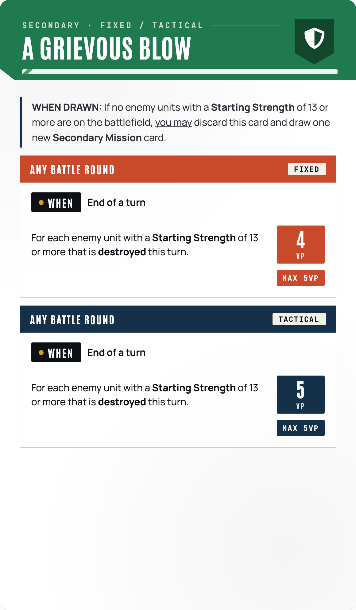
a grievous blow secondary
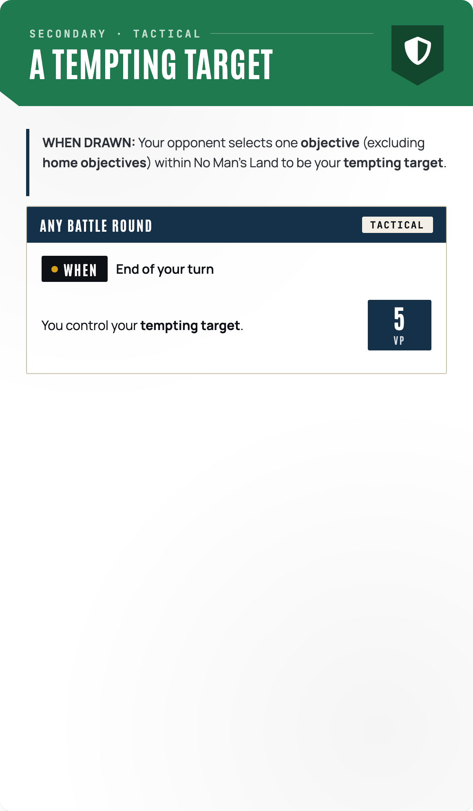
a tempting target secondary
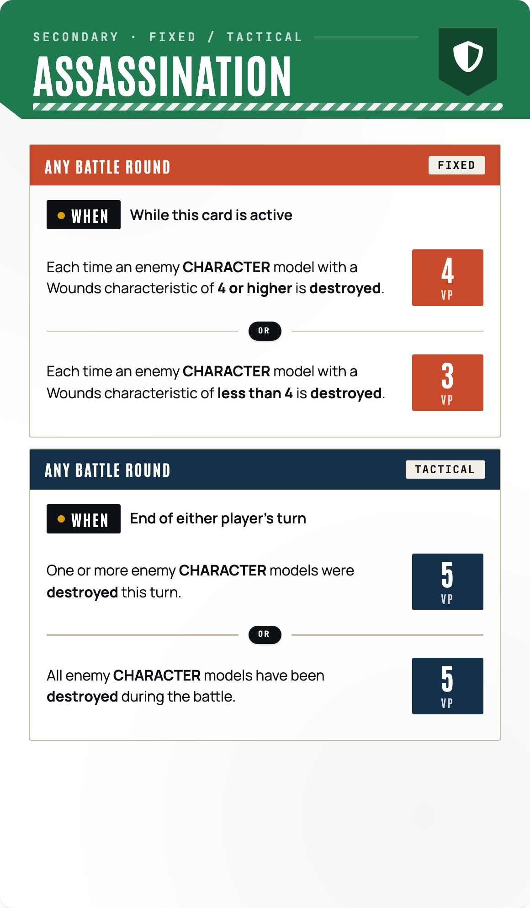
assassination secondary
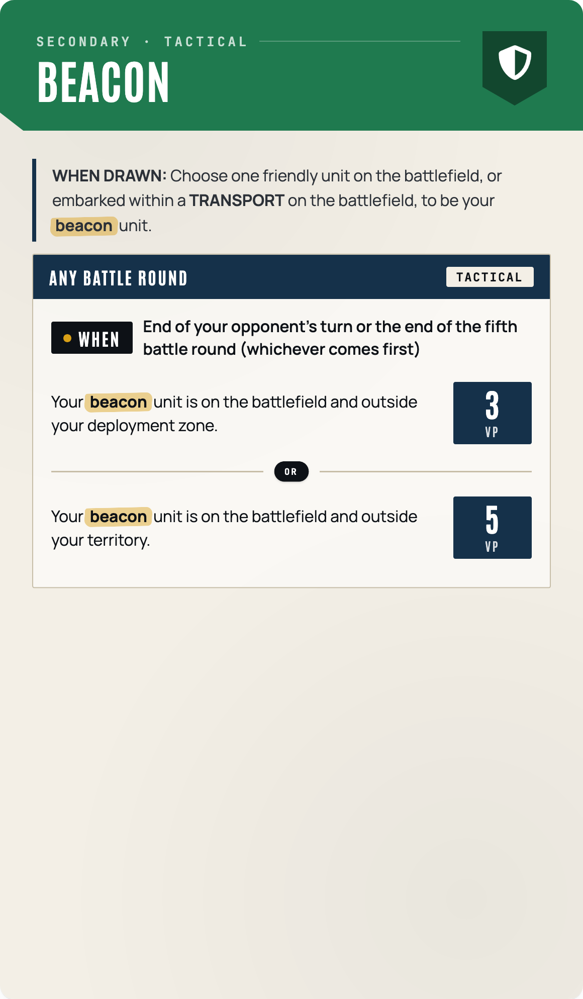
beacon secondary
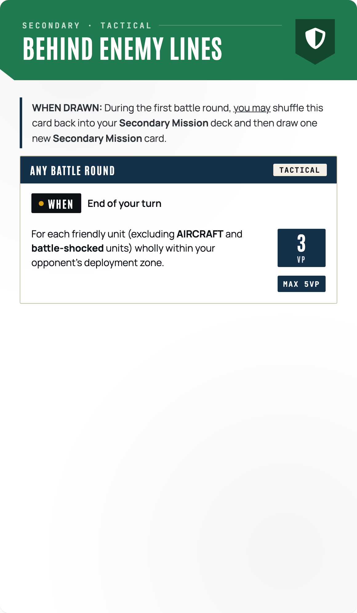
behind enemy lines secondary
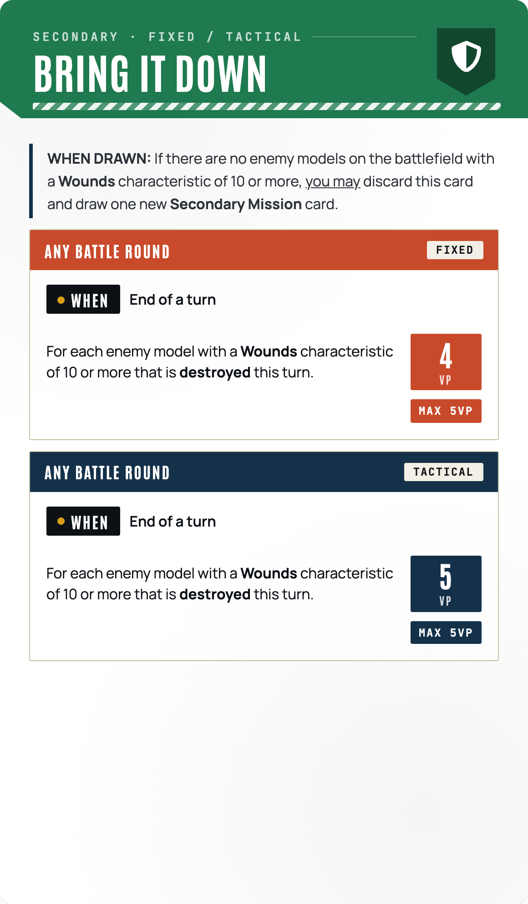
bring it down secondary
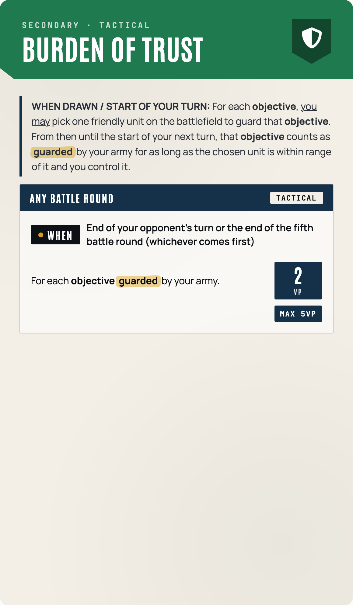
burden of trust secondary
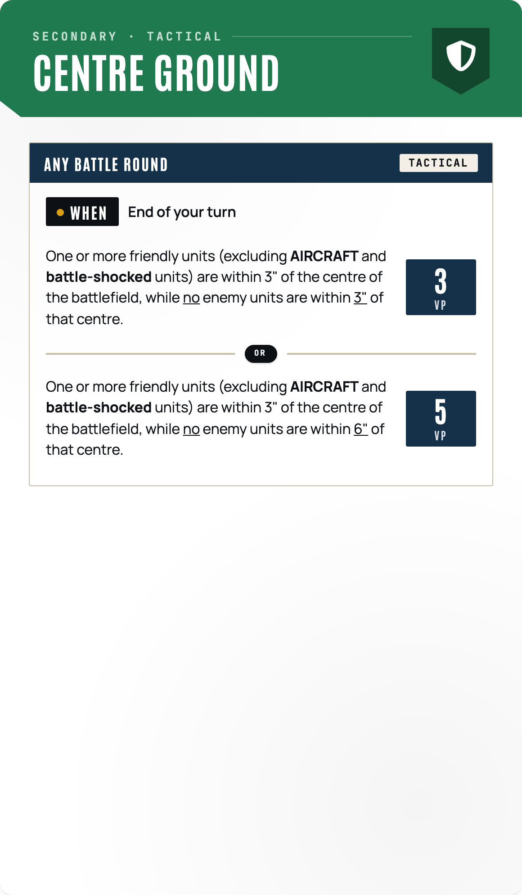
centre ground secondary
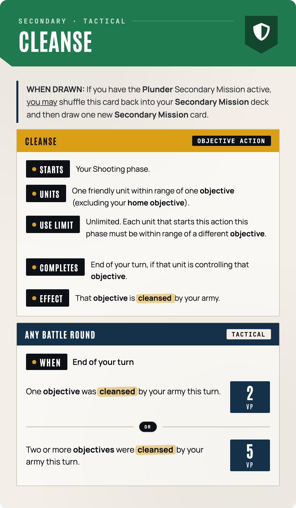
cleanse secondary
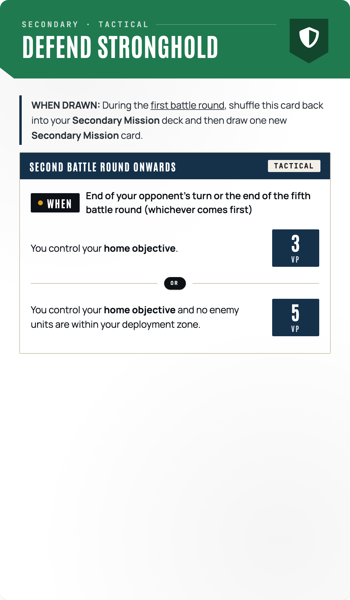
defend stronghold secondary
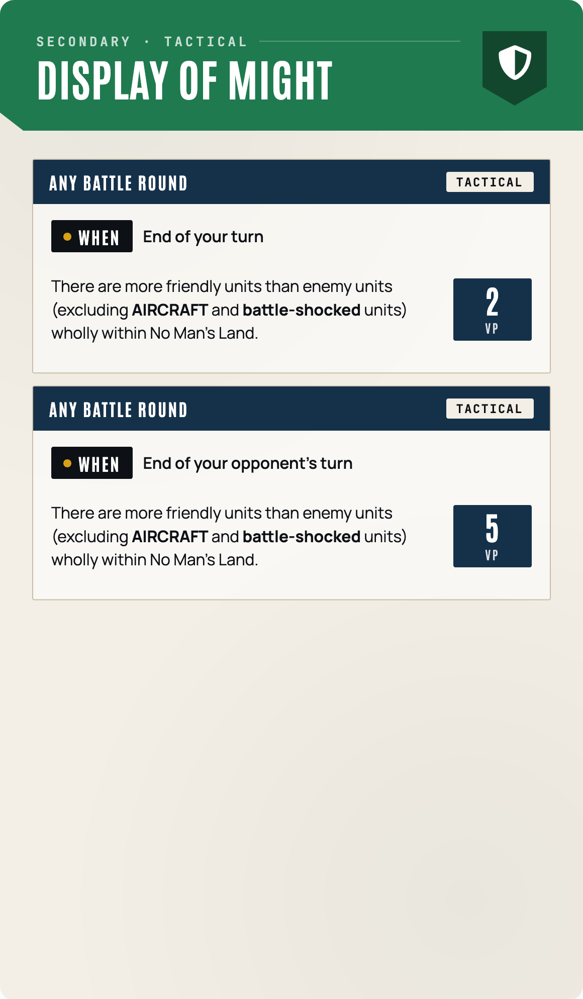
display of might secondary
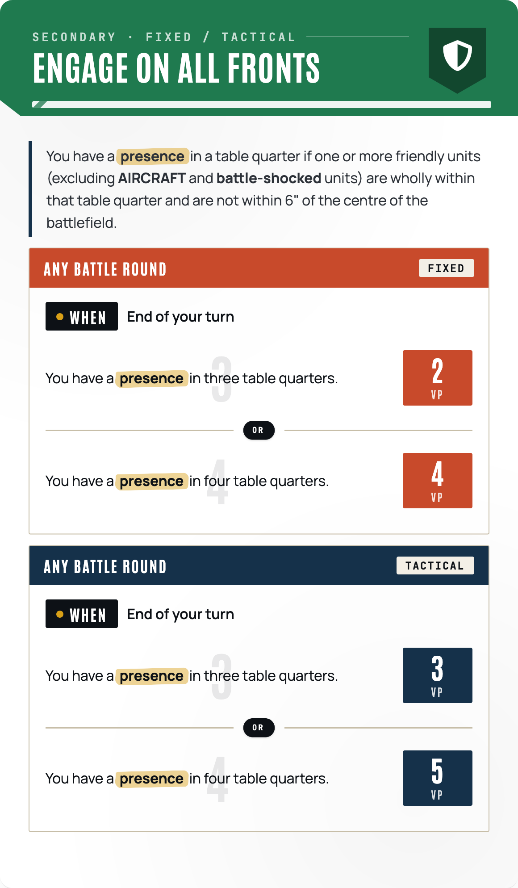
engage on all fronts secondary
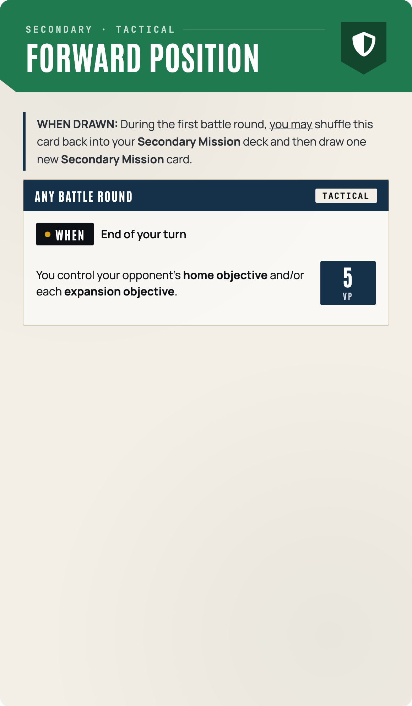
forward position secondary
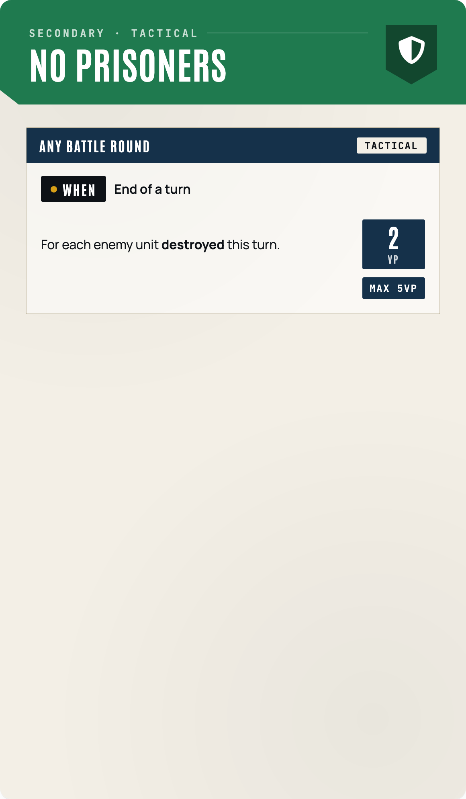
no prisoners secondary
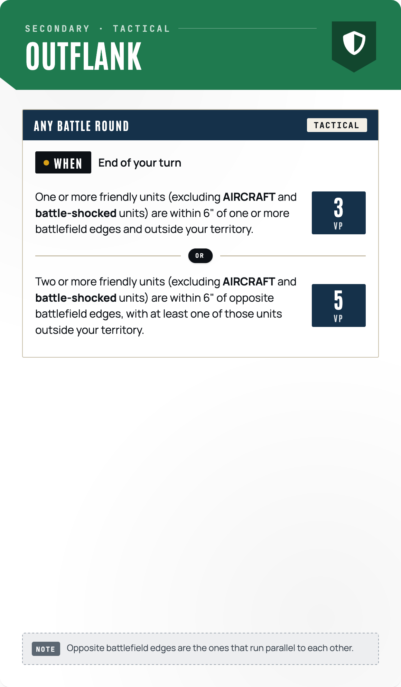
outflank secondary
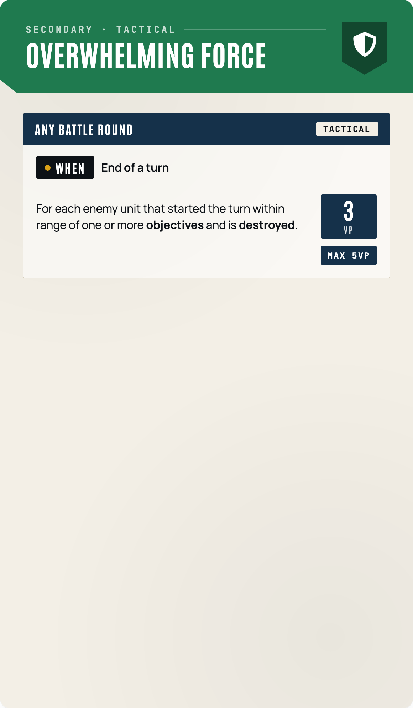
overwhelming force secondary
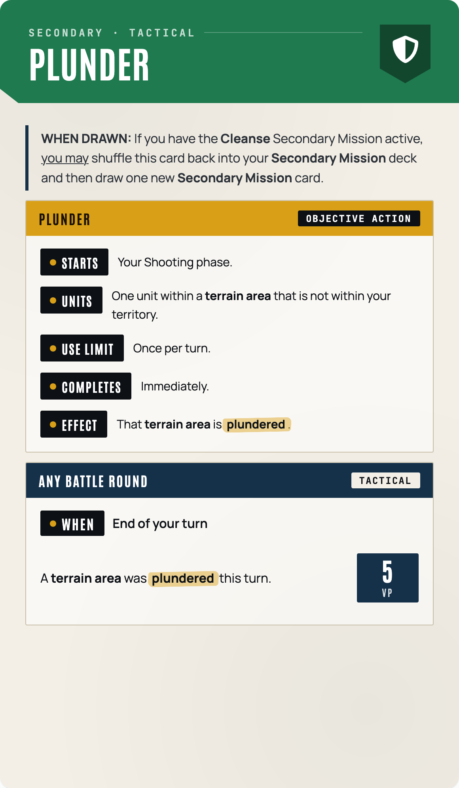
plunder secondary
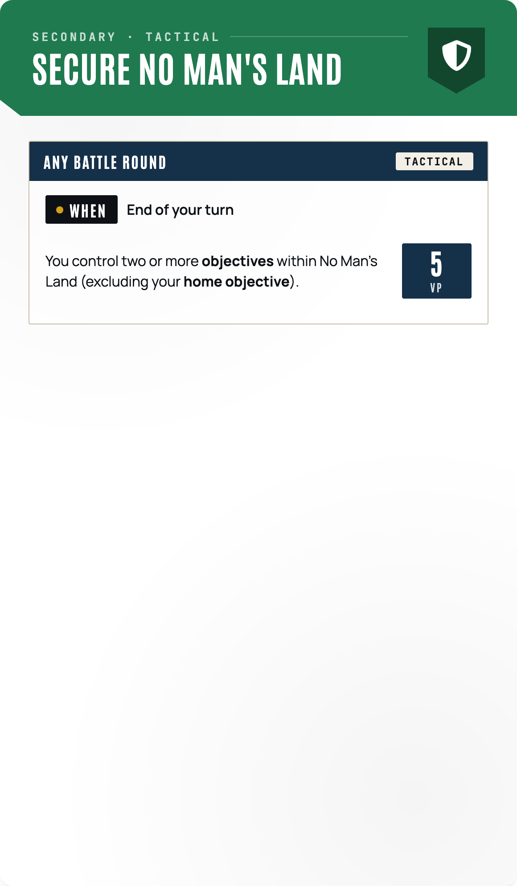
secure no man s land secondary